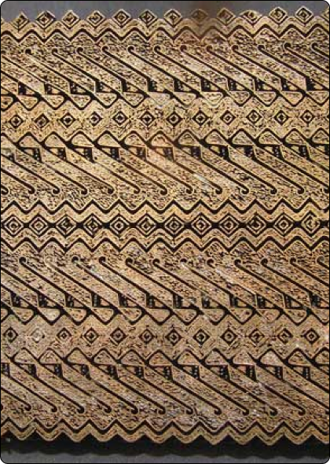
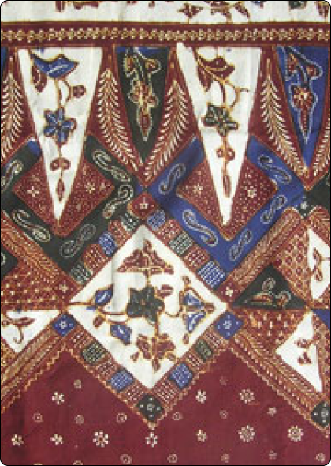
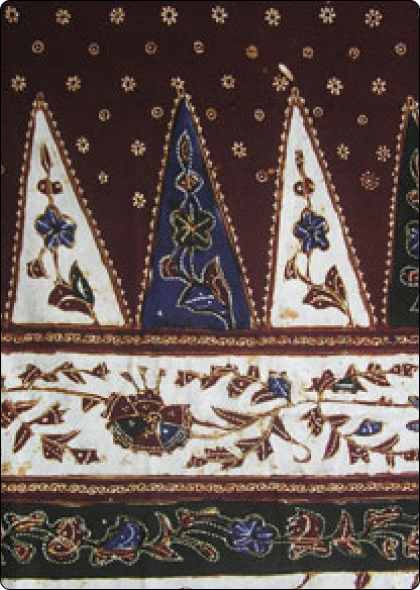

Kampung Batik Djadoel memiliki silsilah yang menarik dalam sejarah
industri batik di Indonesia. Pada awalnya, pada masa kolonial
Belanda di Jawa Barat, kampung ini mulai dikenal sebagai pusat
produksi batik yang berkembang pesat. Pengrajin batik di kampung ini
tidak hanya menghasilkan kain batik berkualitas tinggi, tetapi juga
mempertahankan teknik-teknik tradisional yang telah diturunkan dari
generasi ke generasi.
Setiap pola dan motif batik yang dihasilkan di Kampung Batik Djadoel mencerminkan nilai-nilai budaya Jawa yang kaya dan sejarah yang panjang. Bahkan, proses pembuatan batik itu sendiri telah menjadi bagian integral dari kehidupan sehari-hari masyarakat kampung. Para pengrajin batik di sana tidak hanya ahli dalam menciptakan pola dan warna yang indah, tetapi juga menjaga keaslian motif-motif tradisional yang melekat pada identitas kultural Jawa.
Selain sebagai pusat produksi batik, Kampung Batik Djadoel juga menjadi destinasi wisata yang populer bagi para pengunjung yang tertarik untuk menyaksikan proses pembuatan batik secara langsung dan memahami lebih dalam tentang sejarah serta nilai-nilai budaya yang terkandung di dalamnya. Dengan demikian, Kampung Batik Djadoel tidak hanya memainkan peran penting dalam mempertahankan warisan budaya Jawa, tetapi juga membantu mempromosikan dan melestarikan seni batik sebagai bagian tak terpisahkan dari identitas Indonesia.
Setiap pola dan motif batik yang dihasilkan di Kampung Batik Djadoel mencerminkan nilai-nilai budaya Jawa yang kaya dan sejarah yang panjang. Bahkan, proses pembuatan batik itu sendiri telah menjadi bagian integral dari kehidupan sehari-hari masyarakat kampung. Para pengrajin batik di sana tidak hanya ahli dalam menciptakan pola dan warna yang indah, tetapi juga menjaga keaslian motif-motif tradisional yang melekat pada identitas kultural Jawa.
Selain sebagai pusat produksi batik, Kampung Batik Djadoel juga menjadi destinasi wisata yang populer bagi para pengunjung yang tertarik untuk menyaksikan proses pembuatan batik secara langsung dan memahami lebih dalam tentang sejarah serta nilai-nilai budaya yang terkandung di dalamnya. Dengan demikian, Kampung Batik Djadoel tidak hanya memainkan peran penting dalam mempertahankan warisan budaya Jawa, tetapi juga membantu mempromosikan dan melestarikan seni batik sebagai bagian tak terpisahkan dari identitas Indonesia.
Karya Batik Kampung Jetis


